Plugin ISE
El Ambiente Semántico ISE (Integrated Semantic Enviroment, por sus siglas en inglés) es un Framework creado para facilitar al Ingeniero de Análisis, Diseño, Desarrollo o de Pruebas, la definición, seguimiento y revisión de características que hacen más robusto y entendible el código fuente. Integra las herramientas: Editor de Código, Compilador y Consola semántica.

Figura 1. Frames usados por el entorno semántico
Este ambiente presenta un esquema de diferentes vistas que permiten documentar el código fuente y presentar informes de manera más rápida y comprensible
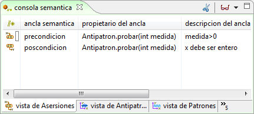
Figura 2. Consola semántica
Creación de un nuevo entorno de Programación: Para utilizar el Framework ISE debe crear una instancia nueva del entorno mediante el Plugin IPE. Seleccione en el Marco de Expresión: Nuevo, Ingeniero de Gestión semántica, IFE.
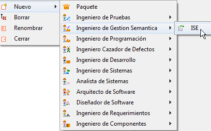
Figura 3. Creando un entorno ISE
Ingrese los datos correspondientes al Entorno.
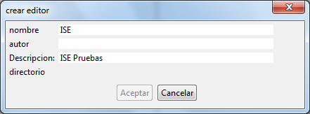
Figura 4. Datos para la creación del entorno ISE
Barra de herramientas del Plugin ISE:

Figura 5. Barra de herramientas del plugin
Nueva Clase: Seleccione el icono Nuevo para crear una clase vacía.

Figur 6. Creando una nueva clase
Se debe ingresar un nombre para a la nueva clase, como se muestra en la Figura 7. Dicho nombre será usado también para nombrar el archivo de código fuente. Ej (Clase_Prueba.java).

Figura 7. Ingresando el nombre de la clase
Colosoft genera una nueva clase vacía e inicia el editor de código.

Figura 8. Nueva clase en el editor de código
Importar Archivos de Código: Seleccione el botón Importar.

Figura 9. Botón para importar código al editor
Seguidamente se abrirá una ventana de selección de archivos, como se muestra en la Figura 10. Importe archivos .java que contengan código fuente de Java.

Figura 10. Seleccionando el nuevo código
Editor: edite o inserte código a modo de texto, el editor de código de Colosoft permite trabajar cómodamente sobre el código resaltando con diferentes colores las palabras claves correspondientes al lenguaje de programación.

Figura 11. Editor de código
Colosoft también le permite resaltar módulos dentro del código mostrando llaves cuadradas al lado izquierdo del editor.

Figura 12. Resaltando segmentos de código dentro del editor
Insertar Anclas Semánticas: Inserte anclas semánticas para capturar información asociada a diferentes aspectos de la clase.
Para agregar un ancla semántica, dentro del editor de código escriba el encabezado en texto de un ancla //* y seguido digite las teclas “Ctrl.+Espacio” simultáneamente para activar la característica de auto-completado. Se mostrará una lista de anclas semánticas apropiadas según el contexto de la línea de código actual.
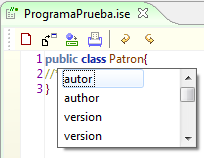
Figura 13. Menú contextual para anclas semánticas
Automáticamente aparece la ventana de texto correspondiente a la ancla, ingrese la información apropiada al contexto de la ancla. Y seleccione OK para guardar la información.
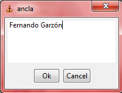
Figura 14. Ingresando los datos del ancla semántica
El ancla semántica aparecerá en forma de icono ubicado a la izquierda del número de línea de código que la contiene, Haga doble clic sobre este para traer su la ventana de texto. Las anclas semánticas muestran diferentes iconos según su tipo.

Figura 15. Anclas insertadas en el editor
Eliminar Anclas Semánticas: para eliminar un ancla, borre el encabezado de la etiqueta y el texto completo de la línea de código correspondiente.
Semantizar el Código: Para relacionar la información de las Anclas Semánticas con las vistas de la consola, es necesario semantizar la clase. Después de editar todas las anclas semánticas de la clase y de haber compilado exitosamente el código, haga clic en el botón Semantizar.
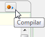 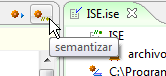
Figura 16. Botones para complar y semantizar
Consola Semántica: Después de Semantizar la clase, las vistas de la consola semántica se cargaran con la información capturada en las anclas semánticas. Haga clic en pestaña de la consola semántica en el marco de extensión y luego sobre sus pestañas internas para acceder a las vistas actualizadas.
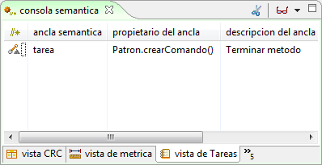
Figura 17. Vista de tareas
Desde algunas vistas puede editar el contenido de las etiquetas semánticas y actualizarlo directamente sobre estas.
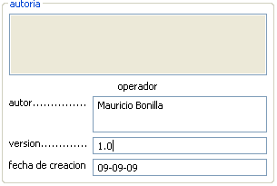
Figura 18. Ancla semántica de autoría
Guardar: Guarde los cambios realizados en el código editado sobre el archivo fuente de la clase que actualmente está abierto.
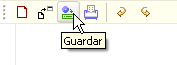
Figura 19. Botón de guardar
Imprimir: Imprima el Código fuente desde el editor de código a su impresora, utilizando la opción Imprimir y el diálogo genérico de impresión.
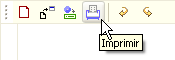
Figura 20. Botón de imprimir
Deshacer - Rehacer: Desasga cambios realizados en el código mediante la opción Deshacer, y rehaga cambios previamente descartados mediante la opción Rehacer.
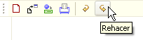
Figura 21. Botón para rehacer acciones en el editor